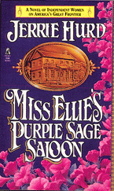

1893
Southern Colorado
PROLOGUE
The gun in her hand never wavered.
The naked man in front of her did. He rocked slightly on the balls of his feet. That back and forth movement marked the sway of his confusion. He wanted to believe she was joking. She knew that from the tiny twitch at the corner of his mouth where his lips kept trying to curl into a boyish grin.
No, it was more. He wanted to believe the love-making and her surprised delight that he had remembered her birthday last night. He wanted that to mean things were the same again.
He said, "Ellie . . ." rolling her name off his tongue with a little half laugh that hung awkwardly on the air.
She reached round with her free hand and cinched her dressing gown shut.
He said, "El . . . lie," emphasizing both halves of her name. But those sounds hung on the air with the same inelegance as his laugh.
That wasn't usual. Seth Watkins had style, a certain brace about him. Even naked no one was going to mistake him for a mule-driving farmer or wage-earning clerk. He was a fancy gambling man, quick with his hands, sharper with his wit. He'd have her, one way or another, if she gave him enough time to think.
She stooped and picked up his boots. She carried them three steps across the carpet to an open second-story window and tossed them outside. From the corner of her eye she saw them raise dust as they landed in the middle of the street. A horse passing by skidded sideways. Its rider swore and looked up to her window just as she sent Seth's hat flying.
Seth's eyes widened. "Ellie, what are you doing?"
It was obvious what she was doing. She balled up his socks and threw them out, then his shirt, his vest, his mackinaw, and scarf. His underwear, a cream-colored union suit, had to be rolled twice to get them tight enough to sail past the overhang below her window.
He watched and acted amused. After the first flicker of startled surprise, he'd crossed his arms over his chest and leaned one shoulder against a bedpost.
She could see past his pose. The morning air was chilled. Little goosebumps were prickling his thighs. And they both knew this went deeper than the chill of the moment. It pricked at their very core.
He said, "How far you going to take this?"
"About two dollars and three bits worth," she answered naming the sum of his unpaid whiskey tab.
His refusal to pay had prompted her to pull out her gun. His too assuming attitude had prompted her to ask for the money. Ellie didn't make allowances. Seth could pay his bill like everyone else. She picked up his pants and fingered through one pocket taking out the appropriate coins and placing them on the edge of her dressing table.
"All right, all right," he said, his voice edgy. He stretched one arm, reaching for his pants, as if he thought her little temper tantrum was over. As if he didn't know the real reason she was doing this. Never mind that he'd just given her the Purple Sage as a birthday present; the suggestion that he needn't pay because he was her partner had to be settled now. He knew damned well she didn't "partner." And while two dollars and seventy-five cents seemed petty next to his birthday generosity, that largess came no where close to what they'd already lost.
She rolled his pants and sailed them out the window with the rest of his clothes. "Now you," she said and motioned him in the same direction.
His face slipped. From outside they could hear catcalls coming from a group of townsmen gathered below, attracted by the falling clothing.
She watched Seth's anger mount, every muscle in his body tensing. She was sure nothing about her could give him any confidence that she wouldn't pull the trigger, but he had to make the next move. He had to decide how serious she was, and she knew it was hard for a man, especially a man being taunted, to make himself believe any woman holding a gun could be more than a silly. She hoped he didn't guess wrong.
He took a step forward.
She cocked the gun.
He drew up straight and half raised his arms. His gaze searched her.
She wondered what he was looking for? She and Seth lived their lives in large gestures--the gun in her hand being merely the most immediate. What was it that he couldn't understand?
He wavered a moment longer rocking again on the balls of his feet. Then there was a split second of mutual realization. However this ended, it was not going to be with her shooting him.
He stepped back two steps and jerked the lace scarf off her dressing table with enough violence to scatter her jewelry box and its contents clear across the room. Her curling iron, puff jar, and sterling silver boudoir set also hit the floor. One of her perfume bottles broke adding heavy fumes of sweet smell.
He tied the scarf around his hips. "I swear, Ellie, you don't have to go at everything like you're killing snakes. You make things too damned hard that way. Not just on me. On yourself."
He looked up to see if his words had any effect.
The gun in her hand never wavered.
He tried the opposite. He grinned his boyish grin--the clef in his chin deepening, his ears pushing back. Normally that would have been entirely disarming. She imagined there were women who wouldn't have been able to resist it. She did.
"I mean it, Ellie," he added. Then he pushed the window open wider and stepped outside onto the overhang to greet a chorus of whistles.
She saw him turn, bow to his hecklers, and shout something jocularly ribald.
Only then did she relax, letting the gun drop as her shoulders sagged. She tipped her head up. She looked straight to the ceiling and blinked back tears.
THREE YEARS LATER
October, 1896
Southern Colorado
Chapter 1
Miss Ellie smiled politely. She was sitting at a round table in the smaller of the two back rooms behind her saloon entertaining the local banker's wife and her sister. She had crossed her legs at the ankle and tucked them under the edge of the linen table cloth. There hidden from view she swung her free foot in a tight circle dissipating some of the impatience that mounted in her like steam whenever she had to sit still too long--a nervous habit carried over from her childhood when she'd had to wait and wait while her mother finished fittings, making fancy dresses for ladies like these.
But above the table she was a picture of serenity as she sipped rose-colored tea from a wine glass and touched the corner of her napkin to her lips. The two ladies were on their second glass of red wine and from time to time fluttered their fingers to their cheeks as if feeling flushed.
Leona, the banker's wife, was a buxom woman who favored brown serge suits tailored and trimmed in black embroidery. She also had the habit of leaning across the table and speaking in husky low tones giving even the trivial an exaggerated importance. She had already brought up the weather, Ellie's contribution to the annual school fund, the newly elected women's officers for the local grange auxiliary and her personal disgust at the sheriff who showed no signs of making wagon drivers slow down through the middle of town. Now she leaned even farther across the table and asked if Ellie had heard anything about Harold Smith's oldest daughter, Samantha Marie?
Ellie shook her head. Harold Smith was one of the biggest ranchers on the south end of the valley. He liked himself and his bourbon unbaptized while his wife was a regular at the church on Sundays and a regular at the Purple Sage most Tuesdays when she stopped into town for supplies. But Ellie hadn't heard anything about the daughter.
Leona cleared her throat. "Well, I can only tell what I saw. But she rode into town last Wednesday and took her horse to the stable."
She paused for effect looking down at her glass of wine.
Ellie wondered at the significance of a girl taking her horse to the stable. One didn't leave an animal tied in the street for more than a few minutes. If the girl had lots of errands . . .
"I was a-going to say my greetings and ask after her mother," Leona continued, "but she didn't come out again. I waited on the corner by the feed store until I was afraid I'd be the cause of talk myself. Who knows how long she was in there or what she was doing."
Ellie stopped swinging her foot. Only yesterday she'd returned a horse and found the stableboy occupied in the loft. She'd wondered at the time who . . . Now she wanted to chuckle but suspected these ladies would hardly consider that an appropriate response.
"Maybe her horse took sick," she offered and sent her foot bouncing again.
Leona looked at Ellie, lowered her brows, then shot a glance at her sister, a slight, bespectacled, and quieter woman.
The sister said without looking up, "She shouldn't have been in there that long." Then stroking the stem of her wine glass, she added, "I don't think the horse was sick."
It was the sister's visit coming from Colorado Springs that had occasioned this giddy escapade into the Purple Sage. Leona hadn't been by since just after the Fourth of July parade. She sometimes bragged that before moving to Colorado, she'd been state president of the Kansas Temperance Society ". . . when it meant `temperance' not `abstinence,'" she was always quick to add in Ellie's presence.
The sister looked up and said, "She could have anyone, you know. She's been to an eastern school."
"But not if word of this gets around," Leona put in.
"Of course not," the sister agreed.
"That's why I daresn't tell anyone," Leona confided directly to Ellie. "You understand."
Ellie didn't. There was a whole social world inhabited by these two that was a little beyond Ellie's ken. Her mother, as a dressmaker, had never really been a part of such circles and although Ellie had watched and learned to mimic the ladies who came to her mother's shop (she could sip and talk and handle her napkin with the right amount of delicacy), she had never quite figured out the pattern of thought, the system of evaluation these ladies used. To her way of thinking, the stableboy was neither unattractive nor unambitious. German, yes, but . . .
And, of course, Leona was telling everyone who would listen to her. And feeling more or less obligated to tell because the girl wasn't supposed to get away with that kind of behavior.
Altogether it was a strange kind of etiquette, Ellie thought, but maybe no stranger than herself, sitting there, sipping tea, moving it around in her mouth, letting the ladies think it was wine. She never drank with any of her customers--didn't let Toby, her bartender, or any of her girls either. A "pretty waiter girl" drunk on the dance floor was an invitation to disaster. So she kept gallons of tea, colored variously to match every drink in the house. When a gentleman bought one of her girls a drink--and he was expected to do that--she got it from one of the specially marked bottles under the counter.
At least it was sugared. Some dance hall saloons didn't even do that for their waiter girls. Ellie used the stuff herself on occasions like this when the womenfolk stopping at the Purple Sage's "ladies' room" expected her to sit with them and sip with them like she was serving refreshments in a parlor. It was as though these women couldn't hear the muffled sound of boots on the board floors, the glasses tinkling, the loud laughs and shouted greetings that filtered through the draperies from the larger bar on the other side.
They would show up in the early afternoon and ring the bell outside the side entrance. Ellie would let them into the little room where she kept two tables, six chairs, and wine in cut-glass decanters to avoid any crudeness a plain bottle might imply. And without exception, in Ellie's "ladies room," the women all sipped their drinks. At home they would only admit to taking a little Hostetter's bitters when they were feeling down, but they usually bought bottles of bourbon and rye "for the husband."
What sent Ellie's foot swinging with impatience was the dancing lightness of the conversation. They were all terribly curious about Ellie, about what she knew of their men, about the girls who worked for her, about Seth . . .
That, she imagined, was what was uppermost on these ladies' minds this afternoon.
By now, everybody in town knew she'd refused to marry him again. How could she? His latest proposal had been part of some craziness that had come over him while he was hunting with Hugh Simon, Colorado's richest entrepreneur, and some other Denver bigwigs. He'd claimed Hugh Simon was going to introduce them to Denver's upper crust as if he seriously thought such society would welcome her. She wasn't welcome in these ladies' parlors.
So she'd thrown him, his foolishness, and the wedding dress he bought her out an upstairs window. It was the second time she'd thrown Seth out that window. At least he'd been clothed this time. He'd stepped around the wedding dress and yelled back something about how he was going to make himself respectable--so damned respectable he might be Governor some day. She'd allowed herself to be amused at that. While it was true that Hugh Simon could make just about anyone he wanted Governor, she didn't see the railroad and mining magnate taking any particular interest in Seth. Hugh Simon was a rich windbag--long on flattery and just as long on forgetfulness.
That was only eight weeks ago and the town of Martinsville still hadn't gotten over talking about the first time she'd thrown Seth out that window at gunpoint three years ago. At least after that no one questioned who owned the Purple Sage. It was always, "Miss Ellie's Purple Sage Saloon."
Now these ladies were nearly bursting with curiosity wanting to know where Seth was . . . what he was doing . . . how a man like Seth Watkins expected to be Governor . . . ?
She and Seth were such staples of the town's gossip that merely stopping off at the Purple Sage aroused a new curiosity if not a new hope of gleaning some tidbit to add to the constant swirl of speculation. What they really needed were breast pumps.
A good breast pump every morning was the only way to keep up with the times. Everything was changing: trains thundered where buffalo once roamed, telephone wires webbed the skyline where Indian braves once stood, and the man who might have walked into her saloon wearing a six-shooter strapped to his leg now wore a "genuine Heidelberg electric belt" under his underwear--the suspensory attachment dropping down and encircling his organ with vitalizing current "to strengthen and enlarge him wondrously," according to the Sears, Roebuck Catalogue where he'd ordered it.
But the stories remained. The stories of the old west lingered over the hills longer than the sunsets. Half imagined in the first place and improved with every telling, the stories measured the land and the people against a scale so much larger-than-life, a woman needed to order bust developers and blondine hair lightener from the same catalogue if she had any hope of being appreciated.
Ellie spent ten minutes of every morning with her own pump, repeating the claims like litany as she worked each side, not because she believed them, but because she appreciated good malarkey. Fine preaching, smooth campaign stumping, wooing and being wooed--it was all malarkey and absolutely essential. She couldn't imagine surviving life without some embellishment.
That was the problem with these two. They were soap-and-water women self-reduced to matter-of-fact practicality and a delicate code of "lady-like virtues."
Leona's conversation had come around to speculation on whether the minister's wife was pregnant, how much salt the German butcher was putting in his sausage and whether or not a certain widow had been riding in the buggy of the local druggist who was married, but whose wife was bedridden, "poor thing," and not expected to live much longer.
That was about as exciting as the conversation was going to get, Ellie imagined, even though Leona kept weaving Seth back into her discourse obviously hoping for some comment from her.
She wasn't worried about how long he'd been gone.
Seth had left her for longer periods and always returned. These ladies seemed to forget that three years ago, Seth had gone off for ten weeks and returned with enough high-stakes poker winnings to buy her this saloon--a gift large enough it would have overbalanced the likes of Leona and her sister and caused them to surrender far too much of themselves. They had surrendered too much anyway as if they thought there was safety in submission or not knowing the unpleasant. With that thought, Ellie amused herself by mentally listing the things these busybodies didn't know and didn't have the nerve to actually ask.
Late at night, they were bolder. More than one of these "ladies of Martinsville" had knocked on Ellie's door after midnight. Alone, wrapped in a cloak, she would come in, sit at this same table, drink coffee and when she had worked up enough courage, ask Ellie the things she really wanted to know: How much her husband drank, what Ellie knew about his business dealings, his money, how much he gambled, his interest in another woman, perhaps, or . . . how to lose a baby; how not to catch one.
Ellie rubbed her hand across her forehead. When she looked up again, Toby was standing just inside the draperies. That startled her. He never came into the "ladies' room" when there were ladies present unless . . . Something was wrong.
She uncrossed her legs and slid her chair back.
But first Toby had to play the gentleman. He tipped his head to one side and gave Leona's hat an exaggerated examination marveling at its handsomeness. Then he complimented her sister on her dress. Ellie watched as the two of them twisted their shoulders with little squirms of enjoyment--the very top of their madcap afternoon, obviously.
In the main bar, his attitude changed. He hemmed, cleared his throat, ran his hand through what was left of his hair, and put on a mask of sober grimness.
"You best sit down, Miss Ellie," he said pulling up the nearest chair.
What was this? She'd just been sitting. But the look on Toby's face was unmistakable--the lines settled and deep. Someone had just died.
She threw a glance around the room. A card playing drifter had laid out a game of lonesome on one table. A couple of homesteaders were chewing on sardine sandwiches near the fireplace. Artie, the old sot who swept up for his two shots a day, was mopping behind the bar. At the bar itself stood five local wranglers drinking beer and wiping the suds off their whiskers with the towels that hung from the rail.
Must be Pete, she thought. Pete, the piano player, dropped over dead and now what would she do for music?
"Mr. Seth has done got himself married," Toby said.
"What?" she asked, bringing her focus back to Toby's face.
"He's down at the General Store buying up everything what's needed for taking up housekeeping 'cause he's got himself a wife."
The two homesteaders were watching her, she realized. They were biting their sandwiches and wiping the oil on their sleeves and all at the same time keeping their eyes glued on her. So were the wranglers. And why not? This was bound to be the biggest talk since the doctor's wife hung herself.
The two busybodies in the back were going to be beside themselves when they found out they missed this. And with that thought she had to stifle an urge to giggle just imagining the frustration of Leona and her sister--being right here and missing it all just the same.
"Do you hear me, Miss Ellie?" Toby repeated. "Seth's got married."
"Yes, yes, of course." She rubbed her hands down the side of her dress. She wasn't going to give anyone the satisfaction of seeing her reduced to tears like a female jiltee in some lurid romantic novel. No man was worth that.
She asked, "Is she pretty? What am I saying? Of course she's pretty. Seth has good taste in women. He always has had--don't you think, Toby?" She shook her head and closed her eyes letting the first and worst wave of hurt wash over while she clung to the question of the other woman's prettiness like it was the straw that would keep her afloat.
Only "pretty" wasn't what she wanted to know. Yes, it was, but not in the way Toby would understand. She wanted to know if this woman made herself "pretty" for Seth. Did she flatter him, arrange herself to please him, make all her time available to him, fuss over his surroundings--always trying to make things more comfortable for him? But for that kind of "prettiness"--a thing she'd observed in the women who came to her mother's shop--she had no words that would make sense to Toby.
Did Seth want that kind of woman? That's what she really wanted to know and couldn't ask because it was a stupid question. Why wouldn't he want that? Why wouldn't any man want it?
When she opened her eyes again, she saw Toby had stepped back behind the bar and was pouring a drink--a long-bit size. He brought it to her.
She sniffed it. It was the real stuff. Oh, hell, why not, she thought and raised it. "To Seth," she said loud enough for everyone in the bar to hear and shot it back like a man.
That got the approval of the wranglers. They nodded, and she noted a couple of them slipping out the front door, no doubt to spread the story of how she'd taken the news.
As she handed the glass back to him, Toby volunteered, "I don't think she was all that pretty."
She looked up.
"I slipped out long enough to run down there and back. I wasn't about to tell you nothing like this if'en I didn't know it was true."
She shrugged. A couple of the other barflies had slid down the counter closer. She shot them a glance, and they ducked their heads.
"They only just arrived," Toby said pulling up a chair next to her. "On the train. At the depot, they hired four wagons with drivers for to haul the furniture."
"Four wagon loads of furniture?" she asked.
"That's right. Mr. Seth's got himself four wagon loads of furniture into the deal," Toby said nodding with exaggerated emphasis. "They say one wagon is just for the dishes--fine glassware and china packed in barrels."
"Seth has a wagon load of dishes and a wife," Ellie said and had to bite her tongue again to keep from giggling, maybe hysterically. She was having trouble putting the reality of it together. She and Seth had left too many towns in the middle of the night with nothing but the clothes on their backs. What's more, she kept picturing Seth's Mexican cook serving his chilies on fine dishes not to mention imaging Seth sitting down each evening across the table from someone well-bred enough to own her own real china.
"She's a little plain, like I said," Toby went on. "But very straight-backed. A proper woman, I would guess. Though I'd say she certainly seems to know her own mind. Right now, she's got Henry, down at the General Store, and his young assistant a-jumping and a-running every which way. She was addressing them as `your kind sirs' and ordering up mostwise one of everything--white goods, bed comforts, couch covers. She took a fancy to a lacquered cribbage board and bought that, too. And dress goods--she was looking over Henry's best dress goods and lace . . ."
Ellie studied Toby. She'd never heard him spit out such a string of words. He was fairly falling over his own tongue keeping up the flow. And she thought, listening to him, that she didn't know much about him. He'd told her he had worked a string of bars down in the Santa Fe Territory before drifting north, but she'd never assumed that was his whole story. He bragged he could mix a hundred different drinks, but she didn't know. He'd never needed that kind of skill in Martinsville where most her customers tossed it down and chased it with a pleasant memory. Still he was a good bartender because of the way he handled trouble, avoiding it mostly. When he had to, he could whip out a shotgun, squint down the barrel and sober the worst drunk without expending ten words in the process.
This flood of talk didn't come easily she knew. He was cushioning her, giving her time to absorb the situation. She had also figured out that he was working up to a finale. Her guess was that she hadn't heard the worst of this yet.
Meanwhile Toby was working his hands, rubbing the knuckles of the left with the finger tips of the right. He avoided looking directly at her. Just after naming off the type and size rotary door bell and brand name carpet sweeper Seth's new wife had purchased, he ran out of words. His mouth flapped open and shut a couple more times, soundlessly. Then there was a pause as he worked his hands a bit more.
Finally he said it: "She's Mr. Simon's niece."
It didn't surprise her. She'd already figured out that it had to be something like that. And why not? Ellie asked herself. For "respectability" what could be better than that? And then she thought . . . Good God, maybe he will be Governor!
Suddenly she hated the fact that she was sitting down. She wanted to pace, run, scream, throw her chair at the eyes following her every move. But she would not--would not give them the satisfaction of seeing her upset.
The bell rang from the back. The ladies were ready to leave. They wanted to settle up. Toby was watching her closely. The barflies had slid another foot closer. Artie, behind the bar, had stopped mopping and was straining his ears.
She stood. "Toby, do we still have that bottle of French champagne in the cellar?"
He shrugged. "I think so."
"Get it, will you?"
"Sure," he said, and he reached over and patted the back of her hand. She realized by that gesture that he thought she was going to drink it herself--drink herself into a stupor with the good stuff because she deserved it. That would have been one way to handle this.
The bell in the back rang again. Her ladies were getting impatient. Ellie nodded to the barflies, then parted the drapes and stepped into the back room.
Leona and her sister were folding their handkerchiefs into their purses and tying on their bonnets. Their quarters were sitting next to the silver dish with the mint flavored sugars. They could have simply left, but politeness required them to say their good-byes to Ellie.
Leona said, "I hope nothing's amiss."
"Amiss?" Ellie asked wondering if the two of them had tiptoed to the drapery and listened. She tried to imagine fat Leona and her thin sister side by side ears pressed to the purple velvet. Maybe they hadn't missed anything after all.
"Your being called out like that, and then we rang twice. Sister was beginning to fear something might be amiss."
Ellie smiled. She considered the lack of reasons she had to forbid these two any pleasure she could afford them in the Purple Sage Saloon. After all that was her business, wasn't it--giving pleasure? She shook her head and said, "Oh, yes, you must excuse me. I've been a little distracted. You see, I've just heard that Mr. Watkins has arrived in town with a new bride, and I was thinking I should go down and meet them. Don't you think so?"
If she'd caught the two of them naked she couldn't have gotten a better reaction. The tight-lipped lady-like smiles that served to keep their cheeks lifted and their double chins tucked up suddenly sagged.
But before they could recover enough to say anything, Ellie excused herself and left.
Returning to the main bar, she took the bottle of champagne from Toby, threw her cape around her shoulders, and left the saloon bare-headed, aware as she went out the door that the barflies were all hastily paying up, and Artie had put his mop down and was shuffling his feet out the door after her.
Outside it was a bright but chilly late October day, with enough wind to tug at her hair and send the ends of her cape flapping. Ellie hardly noticed. She was a Chicago girl. She'd grown up kicking wind tangled skirts out of her way as she walked.
Henry Markam's General Store was on a side street two blocks down from the Purple Sage. She turned the corner and the reality of those four wagons caused her to pause. She pulled her cape closer around herself.
The furniture was tied down and padded where it touched the ropes or the wagon sides. Gray canvas coverings had been stretched over the tops and lashed down. But the canvas on one wagon had come loose. It lifted and flapped in the wind exposing wardrobes, parlor cabinets, chiffonniers--all in dark cherry wood, fine finished, obviously old family pieces. She crossed the street and walked slowly along the boardwalk next to the wagons. She recognized a hall rack, something rounded that was probably a high backed divan couch, brass bedsteads, a dressing table, and two dining tables--one oak, one mahogany.
Seth's wife was obviously a woman of expectations--intended for a marriage where such furniture would frame the continued cultured domesticity of her breeding--tea in the afternoons, rounds of evening social events. No matter how much he might let himself be flattered, Seth didn't match those expectations. So either the woman was daring--taking a chance on love--in which case, why bother with the furniture, or else her expectations had been lowered somehow . . .
She caught sight of Seth and wondered again about his new wife and her expectations. The woman had managed to outfit him to match her furnishings!
He was wearing a full-length racoon-skin coat over a gray-striped suit and looked so eastern, so men's drinking club . . . she wanted to shout and tell him the joke was a good one; he could drop the pretense now.
But it wasn't a joke because even when h
e'd played the role of a fine gentleman in their traveling days, he'd never managed to look quite so entirely the part. His new wife had done a good job on him. Ellie could almost see him hanging that coat on the hall rack and checking his gold watch before he came in to sit down to dinner at the red mahogany dining table now loaded on wagon number two. She just couldn't see him doing it in Martinsville, much less on his ranch. She wondered if he had explained to his new wife that his "Double--WW--Ranch and Fishing Lodge" was just that--masculine and rustic.
He saw her and stiffened.
She held out the bottle of champagne. "I understand congratulations are in order." She took care to make her voice bright. "Thought you and your new wife might enjoy a little something courtesy of the Purple Sage."
He stood there not saying anything as if the fact that half the town had collectively sucked air had left him breathless.
She continued, "Unless, of course, you already have a case of it somewhere." She pulled up the flap of the fourth wagon and peeked under. She saw a piano with a high curved back and a lady's writing desk.
He stepped next to her, pushed the flap back down, and pulled on the rope to tighten it. He whispered out the side of his mouth, "I was going to come ahead and tell you, but everything happened rather fast."
"Not to mention how you seem to be mighty encumbered with furnishings," she whispered back. "That must slow you down some."
He shrugged.
Louder she added, "It's the best champagne in the house. Hope you enjoy it." Then she thrust it into his hands.
He took it awkwardly. Looked at her, looked at the bottle. He turned it over as if to read the label, but she could tell he wasn't focused. His right hand stroked up the back and fingered the cork.
Then suddenly the crowd stepped back, and there she was: Seth's wife.
Her nose was too big. It wasn't terribly out of the ordinary--a little bump at the top and maybe a bit too much length--it was just that at first glance that was the only thing Ellie could see wrong with her. Toby had lied. She was a beauty--a classic beauty--not tall, not too short either, fine-boned, fair-skinned, her face a perfect oval with high rosy cheeks, dark eyes, and a little rose-bud mouth. If she hadn't made the marriage-match of her expectations, it wasn't for lack of good looks.
She wasn't young. Ellie guessed she was probably a couple of years older than herself. But she seemed even older than that, almost old-maidenly. That impression had to do with the way she folded her handkerchief and slipped it into her left sleeve and the way she'd fastened a large, obviously expensive brooch tightly to the top of her collar. It was an old woman's piece of jewelry worn as an old woman would wear it.
Then her maid a fat girl with bright red lips and hair shuffled out of the store carrying three packages wrapped in brown paper and string. She stumbled over her shoes which were thick-soled enough to be boots, and dropped everything, exclaiming the event with a whimpered cry.
Seth's wife turned her head, but didn't bend her back. In tones not unpleasant, but a bit edgy, she told the girl to take the packages back into the store and unwrap them to check for damage.
At the sound of her voice, the girl muttered, "Yes, mum," and Seth stirred himself as if waking. He cleared his throat. "Darling, I would like you to meet Miss Wells, Miss Ellie Wells," and then he went to his new wife, took her elbow and brought her forward.
"My wife, Marta Mae," he added for Ellie.
Then he showed his wife the bottle of champagne saying, "Miss Wells brought us a wedding gift."
Marta Mae glanced at the bottle and then at Ellie, her eyes narrowing slightly. "You must be most uncommonly prepared. I would have thought our wedding too much a surprise for anyone to arrive with gifts."
"Thank you," Ellie muttered. "It's my pleasure."
Marta Mae took the bottle from Seth. "This is very fine champagne." She turned it and read the label giving smooth rounded tones to her French. "You might call it a liquor ne plus ultra," she added.
A murmured chatter rose from the townspeople, and Ellie knew she was supposed to be impressed by this woman's French and her fine manners. Yet something about Marta Mae's mouth annoyed Ellie. It had been particularly noticeable as she pronounced the French.
It was as if her mouth and her whole life had settled into a perpetual pout. Something had gone wrong--terribly wrong for her to be standing there facing the wind in front of the General Store in Martinsville spouting French to a bar maid and a town full of just-plain-folk. And whatever it was, this woman hadn't admitted yet that she had come down in the world.
Ellie glanced at Seth. He was smiling broadly basking in the sensation his new wife was causing. He had always been a grandstander. But he was going to pay dearly for this show, Ellie thought.
A deep rush of grief whirled over her like the wind wrapping her skirts about her. She felt five years old again and helpless as the day she found her mother sobbing amid the bolts of cloth at the back of her shop. She felt as frightened as then, knowing for the first time that her mother could cry like that. Worse, her mother had refused to explain, excusing her tears by saying that sooner or later all men made you cry. Not Ellie. She wasn't crying. But this was wrong, and so she wanted to know one thing: Where was the voice from heaven, the bolt of thunder, the calvary that arrived in the nick of time?
That's what this ought to be, she thought looking around: the last page of a dime novel. The picture was perfect--the wagons lined-up ready to move on, the townspeople all gathered to wish the young couple well, the old flame (well, it wasn't exactly the role she would have picked for herself, but there she was . . .) She shivered in the cold.
Life wasn't like a novel. It was a crazy quilt, mismatched, patched, too hastily assembled. And tomorrow things would go on without a storybook ending even for Marta Mae.
The woman was holding the champagne out to Ellie. "But I'm afraid my husband and I cannot accept this gift, fine as it is."
Ellie glanced at Seth.
He took his wife's arm and pulled her gently towards the front wagon. But she wouldn't be moved.
Ellie took the bottle back.
"But I have something I think you should have. My aunt gave it to me as we were going away saying I really must remember to keep spreading the word." Marta Mae fumbled and then pulled some pages with a green cover from her skirt pocket. She patted Ellie's hand as she filled it with the booklet.
Ellie turned it over. It was a temperance pamphlet!

Miss Ellie knew how to turn heads and cards.
Marta Mae couldn't have a child so she took up a cause.
Seth might have settled for being a gambling man if he hadn't met two extraordinary women. Having both was the problem.
Hugh Simon knew everyone had a price and he had the means to pay it.
Callie didn't intend to be an Irish maid all her life because she had secrets to sell.
©Jerrie Hurd (all text, photos, design)